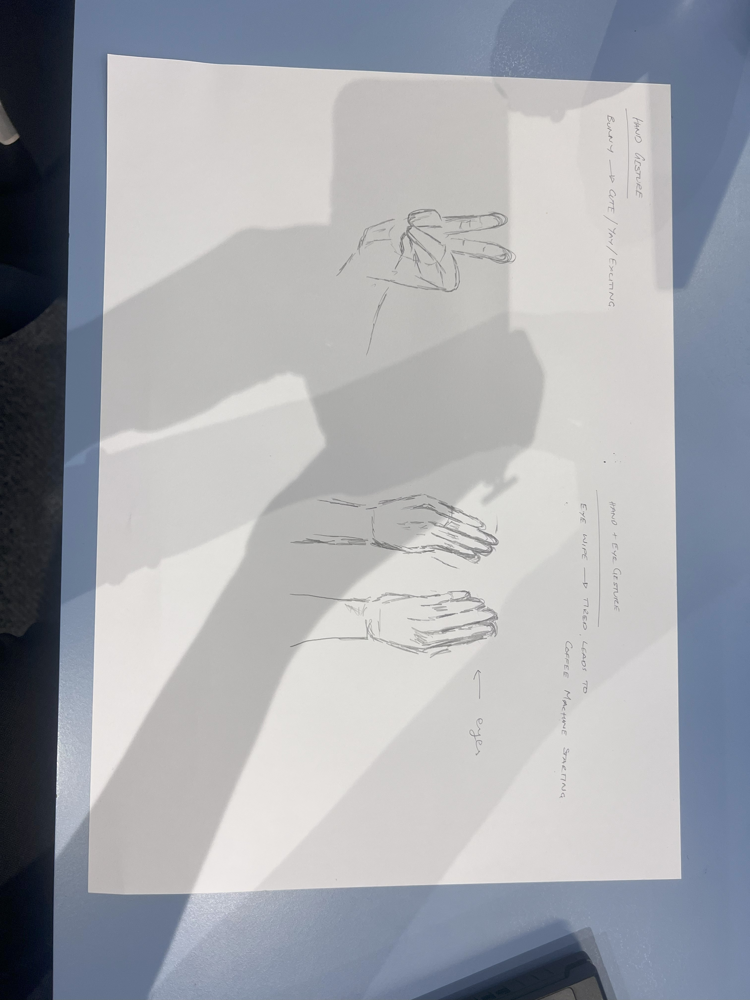
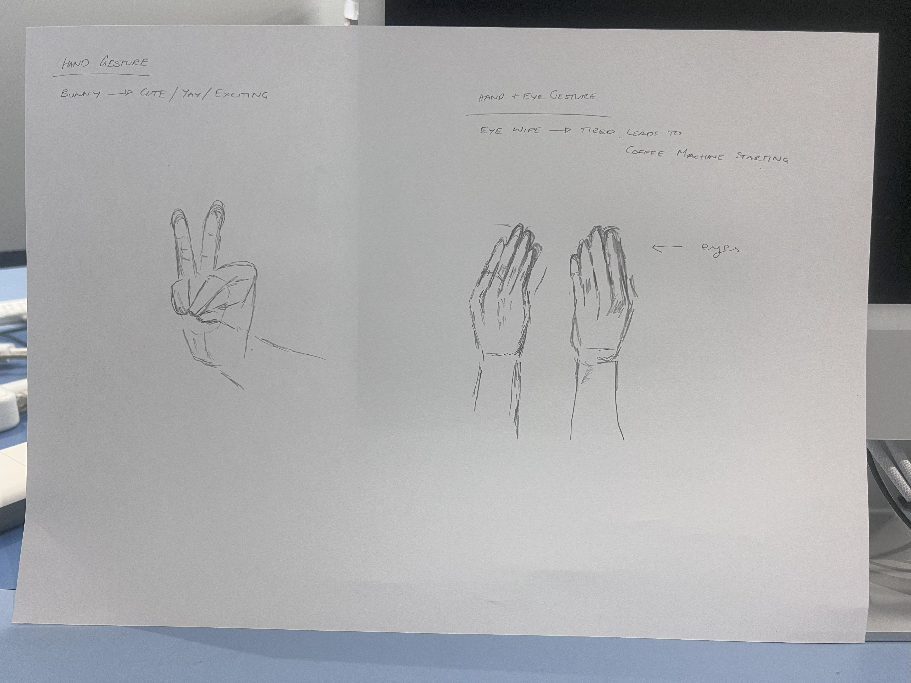

WEEK ONE RECAP
Grand Gestures


Our first gesture: 'Bunny'. Hold up two fingers when you see a puppy. Well done.
Our second gesture: 'Time to Get Going'. Tired? Rubbings your eyes? Good thing your coffee machine just turned on! What a day great day.
Unfolding the Code
Basically, coding is so cool. But behind every cool code... is a cooler filing system.
So first we folder!
Hover over the drop down menu below to unfold filing system.
Learning how to folder meant learning how to navigate how code is read.
This meant creating unique folders within each week, for all the cool fonts and images that each page needed.
Someone wise once said; 'It promotes organization, maintainability, scalability, readability, code reusability, modularity, separation of concerns, and ease of deployment. It is a fundamental aspect of writing clean, efficient, and maintainable code, and it greatly contributes to the overall success of a web application.'
source: https://snehasishkonger.medium.com/why-folder-structure-is-so-important-in-web-dev-project
H(elp)TM(ight)L(ose) This Race
In my first week at uni, they made us run. We raced to complete the code. This is our first attempt at anything to do with html... as you can see.
Upon further inspection, there is so much wrong with this - but it is nice to see how far we have come.